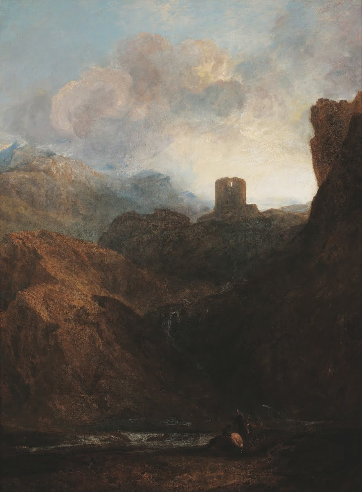
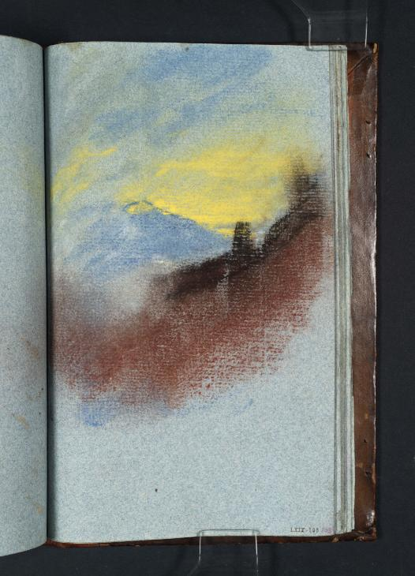

Joseph Mallord William Turner (b.1771, d.1851)


Oil on Canvas · ca.1799-1800


Colored chalks on blue laid paper · ca.1799-1800 · 210 x 135 mm
On the pair
In J.M.W. Turner's original sketch of "Dolbadern Castle," "Study for the Composition of ‘Dolbadern Castle, North Wales,’" we notice brighter hues —likely due to differences in the medium used— as compared to the finished product. Most notably, there is a striking yellow in the sky beyond the castle, a proxy for the gloomy clouds more suited to the vibe of the final painting. I was drawn to these artworks because of their foreboding moodiness, catalyzed by the peril of the easy-to-overlook subject. Though Owain Goch —brother of Prince Llywelyn ap Gruffudd— is not represented in the original sketch, and is even obscured by the dark brown landscape in its ultimate form, I think Turner made the landscape carry the weight of Owain’s imprisonment. The castle becomes a looming presence before we can even notice the army of men en route, potentially pointing to the familiar quality that nature has to make our grave troubles seem meek.